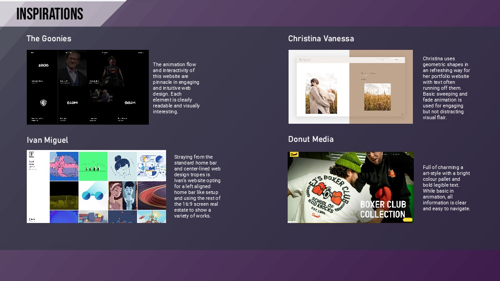
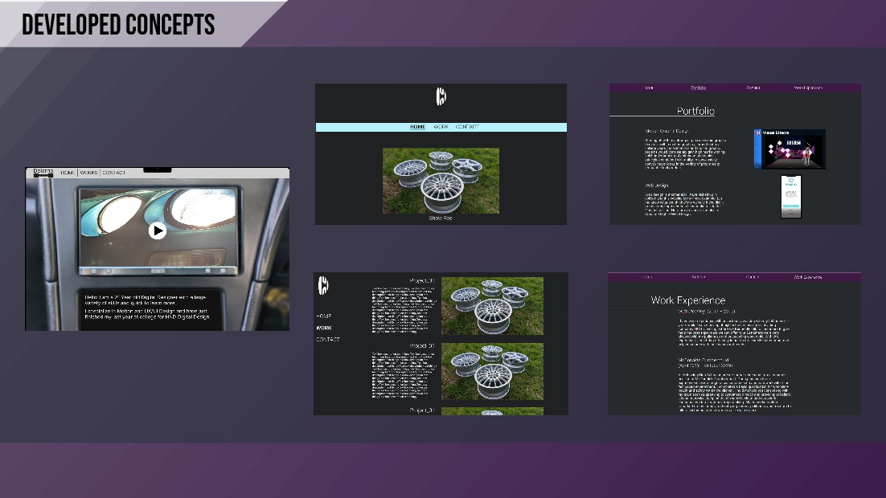
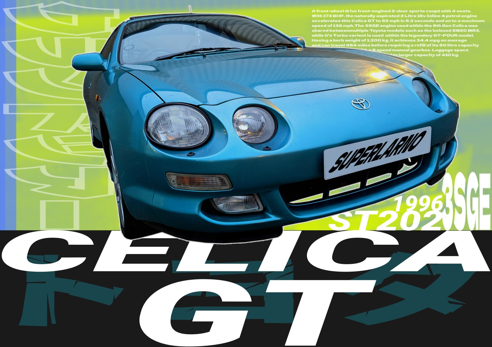

Throughout the development of this website there were many prototypes and design changes made before settling on the final design. To start the development process I looked at other portfolio websites and looked at what aspects made them effective in their purpose.
After the sketching phase I proceeded to learn Figma throughout the further concept development stage so I could learn how to use it for the final website. Figma allowed for easy website building with features such as animation and easy layout editing.
After building the final version of the website within Figma, I then learned that I could not fully publish the website outside of Figma's platform and I could not freely link videos within the design for the showcase videos I had developed, as such I decided the best course of action was to self teach myself HTML and CSS in order to create the website with the creative freedom I wanted and all the present features.
With inspiration from 90s Japanese car magazines I wanted to create a poster for my beloved Celica GT, along with this I wanted to further learn programs such as GIMP and INKSCAPE to further my design skillset.
Website Created by Delarno Herbert